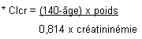

RÉSUMÉ DES CARACTÉRISTIQUES DU PRODUIT
ANSM - Mis à jour le : 02/02/2009
LISINOPRIL/HYDROCHLOROTHIAZIDE QUALIMED 20 mg/12,5 mg, comprimé sécable
2. COMPOSITION QUALITATIVE ET QUANTITATIVE
Lisinopril anhydre ............................................................................................................................... 20 mg
Sous forme de lisinopril dihydraté
Hydrochlorothiazide ......................................................................................................................... 12,5 mg
Pour un comprimé sécable.
Pour la liste complète des excipients, voir rubrique 6.1.
Comprimé sécable.
4.1. Indications thérapeutiques
Traitement de l'hypertension artérielle en cas d'échec thérapeutique d'une monothérapie par un inhibiteur de l'enzyme de conversion.
4.2. Posologie et mode d'administration
Chaque comprimé contient 20 mg de lisinopril et 12,5 mg d'hydrochlorothiazide.
Fonction rénale normale
La posologie habituelle est d'un comprimé en une prise quotidienne à heure régulière.
Insuffisance rénale
· Clairance de la créatinine entre 30 et 80 ml/min: la posologie initiale habituelle est d'un demi- comprimé en une prise quotidienne.
Chez ces malades, la pratique médicale normale comprend un contrôle périodique du potassium et de la créatinine, par exemple tous les deux mois en période de stabilité thérapeutique.
· Clairance de la créatinine inférieure à 30 ml/min ou créatininémie supérieure à 250 μmol/l: contre indication (voir rubrique 4.3).
Sujet âgé
Il est recommandé d'initier le traitement à la posologie d'un demi-comprimé, dans le cas où il existerait une baisse physiologique de la fonction rénale (voir rubrique 4.4).
Ce médicament ne doit jamais être utilisé en cas de:
LIEES AU LISINOPRIL
· hypersensibilité connue au lisinopril
· antécédent d'œdème angioneurotique (œdème de Quincke) lié à la prise d'un inhibiteur de l'enzyme de conversion et en cas d'œdème angioneurotique héréditaire ou idiopathique
· au cours des 2ème et 3ème trimestres de la grossesse.
LIEES A L'HYDROCHLOROTHIAZIDE
· hypersensibilité aux sulfamides
· insuffisance rénale sévère (clairance de la créatinine inférieure à 30 ml/min)
· encéphalopathie hépatique
· au cours de l'allaitement.
Ce médicament est généralement déconseillé en cas de:
· associations avec les diurétiques hyperkaliémiants, les sels de potassium, l'estramustine, le lithium et le sultopride (voir rubrique 4.5);
· sténose bilatérale de l'artère rénale ou sur rein fonctionnellement unique;
· hyperkaliémie,
· au cours du 1er trimestre de la grossesse.
4.4. Mises en garde spéciales et précautions d'emploi
LIEES AU LISINOPRIL
TOUX
Une toux sèche a été rapportée avec l'utilisation des inhibiteurs de l'enzyme de conversion. Elle est caractérisée par sa persistance ainsi que par sa disparition à l'arrêt du traitement. L'étiologie iatrogénique doit être envisagée en présence de ce symptôme. Dans le cas où la prescription d'un inhibiteur de l'enzyme de conversion s'avère indispensable, la poursuite du traitement peut être envisagée.
RISQUE DE NEUTROPENIE/AGRANULOCYTOSE SUR TERRAIN IMMUNODEPRIME
Des inhibiteurs de l'enzyme de conversion ont exceptionnellement entraîné une agranulocytose et/ou une dépression médullaire lorsqu'ils étaient administrés:
· à doses élevées
· chez des patients insuffisants rénaux associant des maladies de système (collagénoses telles que lupus érythémateux disséminé ou sclérodermie), avec un traitement immunosuppresseur et/ou potentiellement leucopéniant.
En cas d'association médicamenteuse multiple, surveiller étroitement la tolérance hématologique et rénale.
Le strict respect des posologies préconisées semble constituer la meilleure prévention de la survenue de ces événements. Toutefois, si un inhibiteur de l'enzyme de conversion doit être administré chez ce type de patients, le rapport bénéfice/risque sera soigneusement mesuré.
ANGIO-ŒDEME (ŒDEME DE QUINCKE)
Un angio-œdème de la face, des extrémités, des lèvres, de la langue, de la glotte et/ou du larynx a été rarement signalé chez les patients traités par un inhibiteur de l'enzyme de conversion, lisinopril inclus. Dans de tels cas, le lisinopril doit être arrêté immédiatement et le patient surveillé jusqu'à disparition de l'œdème.
Lorsque l'œdème n'intéresse que la face et les lèvres, l'évolution est en général régressive sans traitement, bien que les antihistaminiques aient été utilisés pour soulager les symptômes.
L'angio-œdème associé à un œdème laryngé peut être fatal. Lorsqu'il y a atteinte de la langue, de la glotte ou du larynx, pouvant entraîner une obstruction des voies aériennes, une solution d'adrénaline sous-cutanée à 1/1000 (0,3 ml à 0,5 ml) doit être administrée rapidement et les autres traitements appropriés visant à assurer la liberté des voies aériennes doivent être appliqués.
La prescription d'un inhibiteur de l'enzyme de conversion ne doit plus être envisagée par la suite chez ces patients (voir rubrique 4.3).
Les patients ayant un antécédent d'œdème de Quincke non lié à la prise d'un inhibiteur de l'enzyme de conversion ont un risque accru d'œdème de Quincke sous inhibiteur de l'enzyme de conversion.
Il a été observé un taux plus élevé de survenue d'angio-œdème chez les patients de population noire traités par IEC comparativement aux autres populations de patients.
HEMODIALYSE
Des réactions anaphylactoïdes (œdèmes de la langue et des lèvres avec dyspnée et baisse tensionnelle) ont également été observées au cours d'hémodialyses utilisant des membranes de haute perméabilité (polyacrylonitrile) chez des patients traités par inhibiteurs de l'enzyme de conversion. Il est recommandé d'éviter cette association.
LIEES A L'HYDROCHLOROTHIAZIDE
En cas d'atteinte hépatique, les diurétiques thiazidiques et apparentés peuvent induire une encéphalopathie hépatique. Dans ce cas, l'administration du diurétique doit être immédiatement interrompue.
Précautions d'emploi
LIEES AU LISINOPRIL
ENFANT
L'efficacité et la tolérance du lisinopril chez l'enfant n'ayant pas été établies, son utilisation chez l'enfant est déconseillée.
RISQUE D'HYPOTENSION ARTERIELLE ET/OU D'INSUFFISANCE RENALE (EN CAS D'INSUFFISANCE CARDIAQUE, DE DEPLETION HYDROSODEE, ETC...)
Une stimulation importante du système rénine-angiotensine-aldostérone est observée en particulier au cours des déplétions hydrosodées importantes (régime désodé strict ou traitement diurétique prolongé), chez les patients à pression artérielle initialement basse, en cas de sténose artérielle rénale, d'insuffisance cardiaque congestive ou de cirrhose œdémato-ascitique.
Le blocage de ce système par un inhibiteur de l'enzyme de conversion peut alors provoquer, surtout lors de la première prise et au cours des deux premières semaines de traitement, une brusque chute tensionnelle et/ou, quoique rarement et dans un délai plus variable, une élévation de la créatinine plasmatique traduisant une insuffisance rénale fonctionnelle parfois aiguë.
Un risque similaire existe chez les patients ayant une cardiopathie ischémique ou une insuffisance circulatoire cérébrale, chez lesquels une diminution excessive de la pression artérielle pourrait entraîner un infarctus du myocarde ou un accident vasculaire cérébral.
Dans tous ces cas de figure, la mise en route du traitement doit alors être progressive (voir rubrique 4.2).
Chez les patients à risque majoré d'hypotension symptomatique, la mise en route du traitement et l'adaptation posologique doivent être effectuées sous surveillance médicale attentive.
Comme avec les autres vasodilatateurs, le lisinopril doit être administré avec précaution chez les patients avec une sténose de l'aorte ou une myocardiopathie hypertrophique.
SUJET AGE
Chez le sujet âgé, il peut être nécessaire d'utiliser une posologie plus faible (voir rubrique 4.2), dans le cas où il existe une baisse physiologique de la clairance de la créatinine, mesurée avant la mise en route du traitement (voir rubrique 4.4 Mises en garde spéciales et précautions particulières d'emploi liées à l'hydrochlorothiazide). La posologie est ajustée ultérieurement en fonction de la réponse tensionnelle, a fortiori en cas de déplétion hydrosodée, afin d'éviter toute hypotension de survenue brutale.
INSUFFISANCE RENALE
En cas d'insuffisance rénale (définie par une clairance de la créatinine inférieure ou égale à 80 ml/min), le traitement est initié par une posologie initiale faible, puis celle-ci est éventuellement ajustée en fonction de la réponse thérapeutique.
Chez ces malades et chez ceux atteints de néphropathie glomérulaire, la pratique médicale normale comprend un contrôle périodique du potassium et de la créatinine (voir rubrique 4.2).
SUJET AYANT UNE ATHEROSCLEROSE CONNUE
Puisque le risque d'hypotension existe chez tous les patients, on sera particulièrement prudent chez ceux ayant une cardiopathie ischémique ou une insuffisance circulatoire cérébrale, en débutant le traitement à faible posologie.
HYPERTENSION RENOVASCULAIRE
Le traitement de l'hypertension artérielle rénovasculaire est la revascularisation. Néanmoins, les inhibiteurs de l'enzyme de conversion peuvent être utiles aux malades présentant une hypertension rénovasculaire dans l'attente de l'intervention correctrice ou lorsque cette intervention n'est pas possible.
Le traitement doit alors être institué avec une dose faible et une surveillance de la fonction rénale et de la kaliémie doit être exercée, certains patients ayant développé une insuffisance rénale fonctionnelle, réversible à l'arrêt du traitement.
AUTRES POPULATIONS A RISQUE
Chez les patients en insuffisance cardiaque sévère (stade IV) ou chez les patients diabétiques insulino-dépendants (tendance spontanée à l'hyperkaliémie), l'instauration du traitement se fera sous surveillance médicale avec une posologie initiale réduite.
Ne pas interrompre un traitement par bêta-bloquant chez un hypertendu atteint d'insuffisance coronarienne: l'IEC sera ajouté au bêta-bloquant.
STENOSE AORTIQUE/CARDIOMYOPATHIE HYPERTROPHIQUE
Comme avec tous les vasodilatateurs, les inhibiteurs de l'enzyme de conversion doivent être administrés avec prudence chez les patients ayant une obstruction à l'éjection du ventricule gauche.
REACTIONS ANAPHYLACTOIDES LORS DE DESENSIBILISATION PAR DES PIQURES D'HYMENOPTERES
Des patients recevant des IEC lors de désensibilisation avec du venin d'hyménoptère ont rarement présenté des réactions anaphylactoïdes potentiellement fatales. Ces réactions furent évitées en arrêtant provisoirement le traitement par IEC avant chaque désensibilisation.
REACTIONS ANAPHYLACTOIDES LORS D'APHERESES DES LDL
Des réactions anaphylactoïdes peuvent également survenir lors d'aphérèse des LDL.
ANEMIE
Une anémie avec baisse du taux d'hémoglobine a été mise en évidence chez des patients transplantés rénaux ou hémodialysés, baisse d'autant plus importante que les valeurs de départ sont élevées. Cet effet ne semble pas dose-dépendant mais serait lié au mécanisme d'action des inhibiteurs de l'enzyme de conversion.
Cette baisse est modérée, survient dans un délai de 1 à 6 mois puis reste stable. Elle est réversible à l'arrêt du traitement. Celui-ci peut être poursuivi chez ce type de patients, en pratiquant un contrôle hématologique régulier.
INTERVENTION CHIRURGICALE
En cas d'anesthésie, et plus encore lorsque l'anesthésie est pratiquée avec des agents à potentiel hypotenseur, les inhibiteurs de l'enzyme de conversion sont à l'origine d'une hypotension.
L'interruption thérapeutique, lorsqu'elle est possible, est donc recommandée l'avant-veille de l'intervention pour les inhibiteurs de l'enzyme de conversion à durée d'action longue, comme le lisinopril.
LIEES A L'HYDROCHLOROTHIAZIDE
EQUILIBRE HYDROELECTROLYTIQUE
Natrémie
Elle doit être contrôlée avant la mise en route du traitement, puis à intervalles réguliers par la suite.
Tout traitement diurétique peut en effet provoquer une hyponatrémie, aux conséquences parfois graves. La baisse de la natrémie pouvant être initialement asymptomatique, un contrôle régulier est donc indispensable et doit être encore plus fréquent dans les populations à risque représentées par les sujets âgés, a fortiori dénutris, et les cirrhotiques (voir rubriques 4.8 et 4.9).
Kaliémie
La déplétion potassique avec hypokaliémie constitue le risque majeur des diurétiques thiazidiques et apparentés. Le risque de survenue d'une hypokaliémie (< 3,5 mmol/l) doit être prévenu dans certaines populations à risque représentées par les sujets âgés et/ou dénutris et/ou polymédiqués, les cirrhotiques avec œdèmes et ascite, les coronariens, les insuffisants cardiaques. En effet, dans ce cas, l'hypokaliémie majore la toxicité cardiaque des digitaliques et le risque de troubles du rythme.
Les patients présentant un espace QT long à l'ECG sont également à risque, que l'origine en soit congénitale ou médicamenteuse. L'hypokaliémie (de même que la bradycardie) agit alors comme un facteur favorisant la survenue de troubles du rythme sévères, en particulier des torsades de pointes, potentiellement fatales.
Dans tous les cas, des contrôles plus fréquents de la kaliémie sont nécessaires. Le premier contrôle du potassium plasmatique doit être effectué au cours de la semaine qui suit la mise en route du traitement.
CALCEMIE
Les diurétiques thiazidiques et apparentés peuvent diminuer l'excrétion urinaire du calcium et entraîner une augmentation légère et souvent transitoire de la calcémie.
Une hypercalcémie franche peut être en rapport avec une hyperparathyroïdie méconnue. Interrompre le traitement avant d'explorer la fonction parathyroïdienne.
GLYCEMIE
L'effet hyperglycémiant des diurétiques thiazidiques et apparentés est modeste. Néanmoins chez le diabétique, le contrôle de la glycémie doit être systématique.
ACIDE URIQUE
La déplétion hydrosodée induite par les thiazidiques réduit l'élimination urinaire d'acide urique. Chez les patients hyperuricémiques, la tendance aux accès de goutte peut être augmentée: la posologie sera adaptée en fonction des concentrations plasmatiques d'acide urique.
FONCTION RENALE ET DIURETIQUES
Les diurétiques thiazidiques ne sont pleinement efficaces que lorsque la fonction rénale est normale ou peu altérée (évaluée par exemple par le calcul de la clairance de la créatinine à partir de la créatininémie). Chez le sujet âgé, la valeur de la clairance de la créatinine doit être réajustée en fonction de l'âge, du poids et du sexe du patient, selon la formule de Cockcroft*, par exemple:

avec
· l'âge exprimé en années,
· le poids en kg,
· la créatininémie en micromol/l.
·
Cette formule est valable pour les sujets de sexe masculin, et doit être corrigée pour les femmes en multipliant le résultat par 0,85.
L'hypovolémie, secondaire à la perte d'eau et de sodium, induite par le diurétique en début de traitement, entraîne une réduction de la filtration glomérulaire. Il peut en résulter une augmentation de l'urée sanguine et de la créatininémie.
Cette insuffisance rénale fonctionnelle transitoire peut aggraver une insuffisance rénale préexistante.
SPORTIFS
L'attention des sportifs est attirée sur le fait que cette spécialité contient un principe actif pouvant induire une réaction positive des tests pratiqués lors des contrôles antidopage.
LIEES AU LISINOPRIL ET A L'HYDROCHLOROTHIAZIDE
INSUFFISANCE RENALE FONCTIONNELLE
Chez certains hypertendus sans lésion rénale préexistante et dont le bilan biologique témoigne d'une insuffisance rénale fonctionnelle, le traitement sera interrompu et éventuellement repris soit à posologie réduite soit avec un seul des constituants.
HYPOTENSION ET DESEQUILIBRE HYDRO-ELECTROLYTIQUE
Les signes cliniques de déséquilibre hydroélectrolytique, pouvant survenir à l'occasion d'un épisode intercurrent de diarrhée ou de vomissements, seront systématiquement recherchés.
Une surveillance régulière des électrolytes plasmatiques sera effectuée chez de tels patients.
Une hypotension importante peut nécessiter la mise en place d'une perfusion intraveineuse de sérum salé isotonique.
Une hypotension transitoire n'est pas une contre-indication à la poursuite du traitement. Après rétablissement d'une volémie et d'une pression artérielle satisfaisante, il est possible de reprendre le traitement soit à posologie réduite soit avec un seul des constituants.
KALIEMIE
L'association d'un inhibiteur de l'enzyme de conversion à un diurétique hypokaliémiant n'exclut pas la survenue d'une hypokaliémie, notamment chez les patients diabétiques ou insuffisants rénaux.
Un contrôle régulier du potassium plasmatique sera effectué.
4.5. Interactions avec d'autres médicaments et autres formes d'interactions
Certains médicaments ou classes thérapeutiques sont susceptibles de favoriser la survenue d'une hyperkaliémie: les sels de potassium, les diurétiques épargneurs de potassium, les inhibiteurs de l'enzyme de conversion, les inhibiteurs de l'angiotensine II, les anti-inflammatoires non stéroïdiens, les héparines (de bas poids moléculaire ou non fractionnées), la ciclosporine et le tacrolimus, le triméthoprime.
La survenue d'une hyperkaliémie peut dépendre de l'existence de facteurs de risque associés.
Ce risque est majoré en cas d'association des médicaments suscités.
+ Diurétiques épargneurs de potassium:
Seuls ou associés (amiloride, canrénoate de potassium, spironolactone, triamtérène), potassium (sels de)
Hyperkaliémie (potentiellement létale) surtout lors d'une insuffisance rénale (addition des effets hyperkaliémiants). Ne pas associer d'hyperkaliémiants à un inhibiteur de l'enzyme de conversion, sauf en cas d'hypokaliémie.
+ Estramustine
Risque de majoration des effets indésirables à type d'œdème angio-neurotique (angio-œdème).
Associations faisant l'objet de précautions d’emploi
+ Antidiabétiques (insulines, sulfamides hypoglycémiants).
L'utilisation des inhibiteurs de l'enzyme de conversion peut entraîner une majoration de l'effet hypoglycémiant chez le diabétique traité par insuline ou sulfamides hypoglycémiants.
La survenue de malaises hypoglycémiques semble exceptionnelle (amélioration de la tolérance au glucose qui aurait pour conséquence une réduction des besoins en insuline).
Renforcer l'autosurveillance glycémique.
+ Diurétiques hypokaliémiants
Risque d'hypotension artérielle brutale et/ou d'insuffisance rénale aiguë lors de l'instauration du traitement par un inhibiteur de l'enzyme de conversion en cas de déplétion hydrosodée pré-existante.
Dans l'hypertension artérielle, lorsqu'un traitement diurétique préalable a pu entraîner une déplétion hydrosodée, il faut:
· soit arrêter le diurétique avant de débuter le traitement par l'inhibiteur de l'enzyme de conversion, et réintroduire un diurétique hypokaliémiant si nécessaire ultérieurement;
· soit administrer des doses initiales réduites d'inhibiteur de l'enzyme de conversion et augmenter progressivement la posologie.
Dans l'insuffisance cardiaque congestive traitée par diurétiques, commencer par une dose très faible d'inhibiteur de l'enzyme de conversion, éventuellement après réduction de la dose du diurétique hypokaliémiant associé.
Dans tous les cas, surveiller la fonction rénale (créatininémie) dans les premières semaines du traitement par l'inhibiteur de l'enzyme de conversion.
LIEES A L'HYDROCHLOROTHIAZIDE
+ Sultopride
Risque majoré de troubles du rythme ventriculaire, notamment de torsades de pointes (l'hypokaliémie est un facteur favorisant).
Associations faisant l'objet de précautions d’emploi
+ Médicaments donnant des torsades de pointes (sauf sultopride):
Antiarythmiques de classe Ia (quinidine, hydroquinidine, disopyramide); antiarythmiques de classe III (amiodarone, dofétilide, ibutilide, sotalol); certains neuroleptiques (chlorpromazine, cyamémazine, lévomépromazine, thioridazine, trifluopérazine), benzamides (amisulpride, sulpiride, tiapride), butyrophénones (dropéridol, halopéridol), autres neuroleptiques (pimozide); autres médicaments tels que: bépridil, cisapride, diphémanil, érythromycine IV, halofantrine, mizolastine, moxifloxacine, pentamidine, sparfloxacine, vincamine IV,...
Risque majoré de troubles du rythme ventriculaire, notamment de torsades de pointes (l'hypokaliémie est un facteur favorisant).
Corriger toute hypokaliémie avant d'administrer le produit et réaliser une surveillance clinique, électrolytique et électrocardiographique.
+ Autres hypokaliémiants:
Amphotéricine B (voie IV), gluco et minéralocorticoïdes (voie générale), tétracosactide, laxatifs stimulants.
Risque majoré d'hypokaliémie (effet additif).
Surveillance de la kaliémie et, si besoin, correction; à prendre particulièrement en compte en cas de thérapeutique digitalique. Utiliser des laxatifs non stimulants.
+ Digitaliques
Hypokaliémie favorisant les effets toxiques des digitaliques.
Surveillance de la kaliémie et éventuellement ECG.
+ Metformine
Acidose lactique due à la metformine déclenchée par une éventuelle insuffisance rénale fonctionnelle liée aux diurétiques et plus spécialement aux diurétiques de l'anse.
Ne pas utiliser la metformine lorsque la créatininémie dépasse 15 mg/litre (135 micromoles/litre) chez l'homme et 12 mg/litre (110 micromoles/litre) chez la femme.
+ Produits de contraste iodés
En cas de déshydratation provoquée par les diurétiques, risque majoré d'insuffisance rénale aiguë, en particulier lors de l'utilisation de doses importantes de produits de contraste iodés.
Réhydratation avant administration du produit iodé.
+ Carbamazépine
Risque d'hyponatrémie symptomatique.
Surveillance clinique et biologique. Si possible, utiliser une autre classe de diurétiques.
Associations à prendre en compte
+ Calcium (sels de)
Risque d'hypercalcémie par diminution de l'élimination urinaire du calcium.
+ Ciclosporine
Risque d'augmentation de la créatininémie sans modification des concentrations plasmatiques de ciclosporine, même en l'absence de déplétion hydrosodée.
LIEES A L'ASSOCIATION
+ Lithium
Augmentation de la lithémie, pouvant atteindre des valeurs toxiques (diminution de l'excrétion rénale du lithium).
Si l'usage d'un IEC ou d'un diurétique est indispensable, surveillance stricte de la lithémie et adaptation de la posologie.
Associations faisant l'objet de précautions d’emploi
+ AINS (voie générale), y compris les inhibiteurs sélectifs de COX-2, acide acétylsalicylique (aspirine) à forte dose (≥ 3 g/j).
Insuffisance rénale aiguë chez le malade à risque (sujet âgé et/ou déshydraté) par diminution de la filtration glomérulaire ( inhibition des prostaglandines vasodilatatrices, due aux AINS).
Hydrater le malade; surveiller la fonction rénale en début de traitement. Par ailleurs, réduction de l'effet antihypertenseur.
+ Baclofène
Majoration de l'effet antihypertenseur.
Surveillance de la pression artérielle et adaptation posologique de l'antihypertenseur si nécessaire.
Associations à prendre en compte
+ Amifostine
Majoration de l'effet antihypertenseur.
+ Antidépresseurs imipraminiques, neuroleptiques
Effet antihypertenseur, et risque d'hypotension orthostatique majorés (effet additif).
+ Corticoïdes, tétracosactide (voie générale) (sauf hydrocortisone employée comme traitement substitutif dans la maladie d'Addison).
Diminution de l'effet antihypertenseur (rétention hydrosodée des corticoïdes).
+ Alpha-bloquants à visée urologique: alfuzosine, doxazosine, prazosine, tamsulosine, térazosine
Majoration de l'effet hypotenseur. Risque d'hypotension orthostatique majoré.
La présence d'un inhibiteur de l'enzyme de conversion conditionne la contre-indication à l'utilisation de cette association pendant la grossesse.
LIEES AU LISINOPRIL
Les études réalisées chez l'animal n'ont pas mis en évidence d'effet tératogène mais une fœtotoxicité sur plusieurs espèces.
En clinique:
· il n'y a pas d'étude épidémiologique disponible,
· des observations isolées de grossesses exposées au premier trimestre sont a priori rassurantes sur le plan malformatif,
· l'administration pendant le 2ème et le 3ème trimestres, et notamment si elle se poursuit jusqu'à l'accouchement, expose à un risque d'atteinte rénale pouvant entraîner:
o une diminution de la fonction rénale fœtale avec éventuellement oligoamnios,
o une insuffisance rénale néonatale, avec hypotension et hyperkaliémie, voire une anurie (réversible ou non).
· quelques rares cas d'anomalies de la voûte crânienne ont été rapportés avec la prise d'inhibiteurs de l'enzyme de conversion tout au long de la grossesse.
En conséquence:
Le risque malformatif, s'il existe, est vraisemblablement faible. La découverte fortuite d'une grossesse en cours de traitement ne justifie pas une interruption de celle-ci. Néanmoins, la voûte crânienne sera surveillée par échographie.
En revanche, la découverte d'une grossesse sous inhibiteur de l'enzyme de conversion impose de modifier le traitement et ce, pendant toute la grossesse.
Au 2ème et au 3ème trimestres, la prescription d'un IEC est contre-indiquée.
LIEE A L'HYDROCHLOROTHIAZIDE
En règle générale, les diurétiques thiazidiques et apparentés doivent être évités chez la femme enceinte et ne jamais être prescrits au cours des œdèmes physiologiques (et donc ne nécessitant pas de traitement) de la grossesse. Les diurétiques peuvent, en effet, entraîner une ischémie fœtoplacentaire, avec un risque d'hypotrophie fœtale.
Par ailleurs, dans de rares cas, des thrombocytopénies néonatales sévères ont été rapportées.
Les diurétiques restent néanmoins un élément essentiel du traitement des œdèmes d'origine cardiaque, hépatique et rénale survenant chez la femme enceinte.
LIE AU LISINOPRIL
Il n'existe pas de données concernant le passage dans le lait maternel.
LIE A L'HYDROCHLOROTHIAZIDE
Les thiazidiques sont excrétés en faible quantité dans le lait maternel. Néanmoins, leur utilisation est déconseillée en période d'allaitement en raison:
· d'une diminution voire d'une suppression de la sécrétion lactée,
· de leurs effets indésirables, notamment biologiques (kaliémie),
· de leur appartenance aux sulfamides avec risques d'allergie et d'ictère nucléaire.
En conséquence l'utilisation de ce médicament est contre-indiquée au cours de la période d'allaitement.
4.7. Effets sur l'aptitude à conduire des véhicules et à utiliser des machines
Les patients amenés à conduire des véhicules ou à utiliser des machines doivent être attentifs à la survenue possible de vertiges.
Au plan clinique
Ont été retrouvés:
· céphalée, asthénie, sensations vertigineuses,
· hypotension orthostatique ou non (voir rubrique 4.4),
· nausées, diarrhée,
· palpitations, douleurs thoraciques,
· impuissance,
· toux (voir rubrique 4.4),
· exceptionnellement: angio-œdème (œdème de Quincke) (voir rubrique 4.4).
Les effets indésirables rares survenus lors des essais contrôlés ou après la mise sur le marché comprennent:
· effets digestifs: vomissements, douleurs abdominales, ictère, hépatite (cytolytique ou cholestatique), pancréatite, trouble du goût,
· effets psychiques: confusion mentale, dépression,
· effet respiratoire: bronchospasme,
· effets cutanés: alopécie, prurit, urticaire, psoriasis, pemphigus, syndrome de Stevens-Johnson et érythème polymorphe,
· effets rénaux: oligurie/anurie, insuffisance rénale aiguë.
Un complexe symptomatique a également été rapporté qui comporte un ou plusieurs des symptômes suivants: fièvre, vascularite, myalgies, arthralgies, présence d'anticorps anti-nucléaires, augmentation de la vitesse de sédimentation, éosinophilie et leucocytose, éruption cutanée, photosensibilisation ou autres manifestations cutanées.
Au plan biologique
· Augmentation modérée de l'urée et de la créatinine plasmatique, réversible à l'arrêt du traitement. Cette augmentation est plus fréquemment rencontrée en cas de sténose des artères rénales, hypertension artérielle traitée par diurétiques, insuffisance rénale.
En cas néphropathie glomérulaire, l'administration d'un inhibiteur de l'enzyme de conversion peut occasionner une protéinurie.
· Hyperkaliémie, habituellement transitoire.
· Augmentation des enzymes hépatiques et de la bilirubine, en général réversibles.
· Une anémie (voir rubrique 4.4) a été rapportée avec des inhibiteurs de l'enzyme de conversion, sur des terrains particuliers (transplantés rénaux, hémodialysés). De rares cas d'anémie hémolytique ont été signalés.
· Une insuffisance médullaire traduite par anémie et/ou thrombopénie et/ou neutropénie et/ou de rares cas d'agranulocytoses ont été rapportés.
LIEES A L'HYDROCHLOROTHIAZIDE
Au plan clinique
· En cas d'insuffisance hépatique, possibilité de survenue d'encéphalopathie hépatique (voir rubriques 4.3 et 4.4).
· Réactions d'hypersensibilité, essentiellement dermatologiques, chez des sujets prédisposés aux manifestations allergiques et asthmatiques.
· Eruptions maculopapuleuses, purpura, possibilité d'aggravation d'un lupus érythémateux aigu disséminé préexistant.
· Nausées, constipation, vertiges, asthénie, paresthésies, céphalées, rarement constatés et cédant le plus souvent à une réduction de posologie.
· Exceptionnellement: pancréatite.
Au plan biologique
· Une déplétion potassique avec hypokaliémie, notamment en cas de diurèse intensive, et particulièrement grave dans certaines populations à risque (voir rubrique 4.4).
· Une hyponatrémie avec hypovolémie à l'origine d'une déshydratation et d'une hypotension orthostatique.
La perte concomitante d'ions chlore peut secondairement entraîner une alcalose métabolique compensatrice: l'incidence et l'amplitude de cet effet sont faibles.
· Une élévation de l'uricémie et de la glycémie au cours du traitement: l'emploi de ces diurétiques sera soigneusement discuté chez les sujets goutteux et diabétiques.
· Augmentation des lipides plasmatiques à forte dose.
· Des troubles hématologiques, beaucoup plus rares, thrombocytopénie, leucopénie, agranulocytose, aplasie médullaire, anémie hémolytique.
· Hypercalcémie exceptionnelle.
Les événements les plus probables, en cas de surdosage, sont l'hypotension, les perturbations électrolytiques et l'insuffisance rénale. Le patient doit être étroitement surveillé.
Le traitement sera fonction de la nature et de la sévérité des symptômes, il pourra comprendre toute mesure visant à empêcher l'absorption digestive du produit et à en accélérer l'élimination.
Si une hypotension importante se produit, elle peut être combattue par la mise du patient en decubitus, tête basse, et au besoin par une perfusion IV de solution isotonique de chlorure de sodium ou par tout autre moyen d'expansion volémique.
Le lisinopril est de surcroît dialysable.
L'utilisation de membranes de haute perméabilité (polyacrylonitrile) doit être évitée (voir rubrique 4.4).
LIE A L'HYDROCHLOROTHIAZIDE
Les signes de l'intoxication aiguë se manifestent surtout par des désordres hydro-électrolytiques (hyponatrémie, hypokaliémie). Cliniquement, possibilité de nausées, vomissements, hypotension artérielle, crampes, vertiges, somnolence, états confusionnels, polyurie ou oligurie allant jusqu'à l'anurie (par hypovolémie).
Les premières mesures consistent à éliminer rapidement le ou les produits ingérés par lavage gastrique et/ou administration de charbon activé puis à restaurer l'équilibre hydro-électrolytique dans un centre spécialisé jusqu'à normalisation. La correction d'une hyponatrémie doit être réalisée très progressivement.
5. PROPRIETES PHARMACOLOGIQUES
5.1. Propriétés pharmacodynamiques
Classe pharmacothérapeutique: INHIBITEURS DE L'ENZYME DE CONVERSION ET DIURETIQUES, Code ATC: C09BA03.
LIEES AU LISINOPRIL
MECANISME DE L'ACTION PHARMACOLOGIQUE:
Le lisinopril est un inhibiteur de l'enzyme de conversion (IEC) de l'angiotensine I en angiotensine II, substance vasoconstrictrice mais également stimulant de la sécrétion d'aldostérone par le cortex surrénalien.
Il en résulte:
· une diminution de la sécrétion d'aldostérone,
· une élévation de l'activité rénine plasmatique, l'aldostérone n'exerçant plus de rétrocontrôle négatif,
· une baisse des résistances périphériques totales avec une action préférentielle sur les territoires musculaire et rénal, sans que cette baisse ne s'accompagne de rétention hydrosodée ni de tachycardie réflexe, en traitement chronique.
L'action antihypertensive du lisinopril se manifeste aussi chez les sujets ayant des concentrations de rénine basses ou normales.
CARACTERISTIQUES DE L'ACTIVITE ANTIHYPERTENSIVE
Le lisinopril est actif à tous les stades de l'hypertension artérielle: légère, modérée ou sévère. On observe une réduction des pressions artérielles systolique et diastolique, en decubitus et en orthostatisme.
L'activité antihypertensive après une prise unique se manifeste dès la 1ère heure, est maximale au bout de 6 heures et se maintient au moins pendant 24 heures, sans modification du rythme circadien de la pression artérielle.
Le blocage résiduel de l'enzyme de conversion à 24 heures se situe aux environs de 80%.
Chez les patients répondeurs, la normalisation tensionnelle se maintient sans échappement.
L'arrêt du traitement ne s'accompagne pas d'un rebond de l'hypertension artérielle.
Les IEC peuvent avoir une activité antihypertensive moins marquée chez les patients hypertendus des populations noires que chez ceux des autres populations. Cette différence disparaît lorsqu'un diurétique est associé.
LIEES A L'HYDROCHLOROTHIAZIDE
L'hydrochlorothiazide est un diurétique thiazidique qui agit en inhibant la réabsorption du sodium au niveau du segment cortical de dilution. Il augmente l'excrétion urinaire du sodium et des chlorures et, à un moindre degré, l'excrétion du potassium et du magnésium, accroissant de la sorte la diurèse et exerçant une action antihypertensive.
Le délai de l'apparition de l'activité diurétique est d'environ 2 heures.
Cette activité est maximale au bout de 4 heures et se maintient de 6 à 12 heures.
Il existe un plateau de l'effet thérapeutique des diurétiques thiazidiques au-delà d'une certaine dose, tandis que les effets indésirables continuent d'augmenter: en cas d'inefficacité du traitement, ne pas chercher à augmenter les doses.
LIEES A L'ASSOCIATION
Au cours d'études cliniques, l'administration concomitante de lisinopril et d'hydrochlorothiazide a entraîné des réductions plus importantes de la pression artérielle qu'avec chacun des produits administré seul.
L'administration de lisinopril inhibe l'axe rénine-angiotensine-aldostérone et tend à réduire la perte potassique induite par l'hydrochlorothiazide.
5.2. Propriétés pharmacocinétiques
LIEES AU LISINOPRIL
Par voie orale, le lisinopril est rapidement absorbé.
La quantité absorbée représente 25% de la dose administrée, mais il existe une grande variabilité inter-individuelle. L'absorption n'est pas influencée par la prise d'aliments.
Le pic de concentrations plasmatiques du lisinopril est atteint entre la 6ème et la 8ème heure après la prise orale (à la phase aiguë de l'infarctus du myocarde, ce temps est légèrement plus tardif).
Le lisinopril ne se lie pas aux protéines plasmatiques (excepté à l'enzyme de conversion).
Après administration répétée de lisinopril en prise unique quotidienne, l'état d'équilibre est atteint en 2 à 3 jours en moyenne. La demi-vie effective d'accumulation du lisinopril est de 12 heures.
Le lisinopril est éliminé dans les urines sous forme inchangée.
Chez l'insuffisant rénal, la clairance rénale du lisinopril est proportionnelle à la clairance de la créatinine. Les concentrations plasmatiques de lisinopril sont significativement plus élevées chez les patients ayant une clairance de la créatinine inférieure ou égale à 70 ml/min.
Il existe un passage des inhibiteurs de l'enzyme de conversion dans le placenta.
LIEES A L'HYDROCHLOROTHIAZIDE
Absorption
La biodisponibilité de l'hydrochlorothiazide varie selon les sujets entre 60 et 80%. Le temps nécessaire pour obtenir le pic plasmatique (Tmax) varie entre 1,5 et 5 heures, la moyenne se situant aux environs de 4 heures.
Distribution
La liaison aux protéines plasmatiques est de 40%.
La demi-vie est très variable d'un sujet à un autre: elle est comprise entre 6 et 25 heures.
Elimination
La clairance rénale représente 90% de la clairance totale.
Le pourcentage de produit inchangé retrouvé dans les urines est de 95%.
Chez les insuffisants rénaux et cardiaques, la clairance rénale de l'hydrochlorothiazide est diminuée, et la demi-vie d'élimination augmentée. Il en est de même chez les sujets âgés, avec en outre une augmentation de la concentration plasmatique maximale.
5.3. Données de sécurité préclinique
Sans objet.
Amidon prégélatinisé, amidon de maïs, hydrogénophosphate de calcium dihydraté, mannitol, stéarate de magnésium, oxyde de fer rouge (E172).
Sans objet.
3 ans.
6.4. Précautions particulières de conservation
Pas de précautions particulières de conservation.
6.5. Nature et contenu de l'emballage extérieur
28, 30, 84, 90 ou 100 comprimés sous plaquettes thermoformées (PVC/Aluminium).
6.6. Précautions particulières d’élimination et de manipulation
Pas d'exigences particulières.
7. TITULAIRE DE L’AUTORISATION DE MISE SUR LE MARCHE
QUALIMED
117, allée des Parcs
69800 Saint-Priest
8. NUMERO(S) D’AUTORISATION DE MISE SUR LE MARCHE
· 366 819-3: 28 comprimés sous plaquettes thermoformées (PVC/Aluminium).
· 373 862-8: 30 comprimés sous plaquettes thermoformées (PVC/Aluminium).
· 373 863-4: 84 comprimés sous plaquettes thermoformées (PVC/Aluminium).
· 373 864-0: 90 comprimés sous plaquettes thermoformées (PVC/Aluminium).
· 566 605-7: 100 comprimés sous plaquettes thermoformées (PVC/Aluminium).
9. DATE DE PREMIERE AUTORISATION/DE RENOUVELLEMENT DE L’AUTORISATION
[à compléter par le titulaire]
10. DATE DE MISE A JOUR DU TEXTE
[à compléter par le titulaire]
Sans objet.
12. INSTRUCTIONS POUR LA PREPARATION DES RADIOPHARMACEUTIQUES
Sans objet.
Liste I.